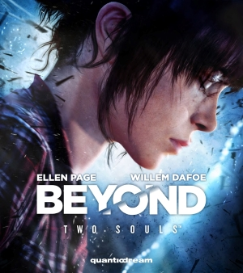
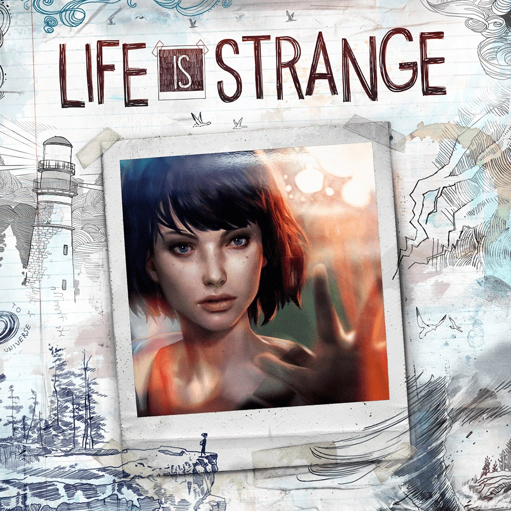
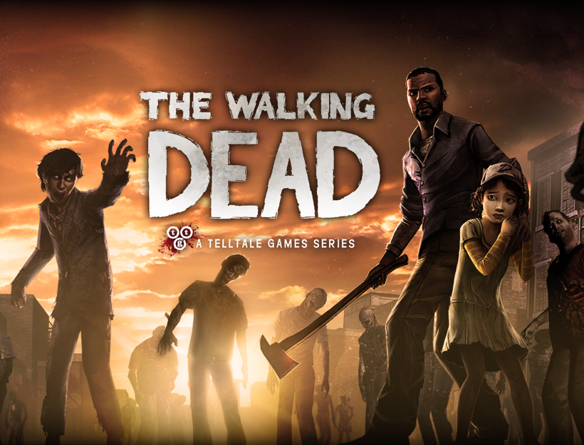

Beyond Two Souls follows the story of Jodie, a girl who has struggled since childhood with supernatural experiences and unexplained powers. Her overwhelmed parents eventually relinquish her to the U.S. government, where she is studied and trained for military use. This emotional narrative explores the realms between life and death, and when the truth about Aiden, the entity tethered to Jodie, is revealed, it changes everything.

Life is Strange follows Max and Chloe, childhood best friends who were separated when Max's family moved away. When Max returns years later, Chloe is almost unrecognizable, hardened and carrying the weight of everything she's been through. Suddenly, Max discovers she has the power to rewind time. As the two reconnect, you uncover the truth about why Chloe changed so much and what really happened to Rachel. A beautiful game with a calming soundtrack and a dark mystery waiting to be uncovered.

Telltale's The Walking Dead centers on Lee and Clementine, one of the most iconic duos in story-driven gaming. Lee, a convicted criminal, is being transported to jail when the outbreak begins. After the police car crashes, he finds himself alone in the woods and fighting to survive. Seeking shelter, he stumbles into a suburban home and discovers Clementine, a brave young girl waiting for her parents to return. After saving her from her zombified babysitter, Lee takes on a new purpose: protecting Clementine at all costs. This emotional story follows Lee's transformation from a man with a complicated past into a gentle, determined guardian. It's unforgettable.

Detroit: Become Human takes place in a near-future world where androids begin developing consciousness. As mistreated androids start to rebel, society becomes divided between those who believe androids deserve rights and those who see them as property. The game follows three androids: Kara, Connor, and Markus; each with a unique journey shaped entirely by your choices. Their stories explore survival, duty, and revolution, ultimately asking you to decide: are you on their side or not?